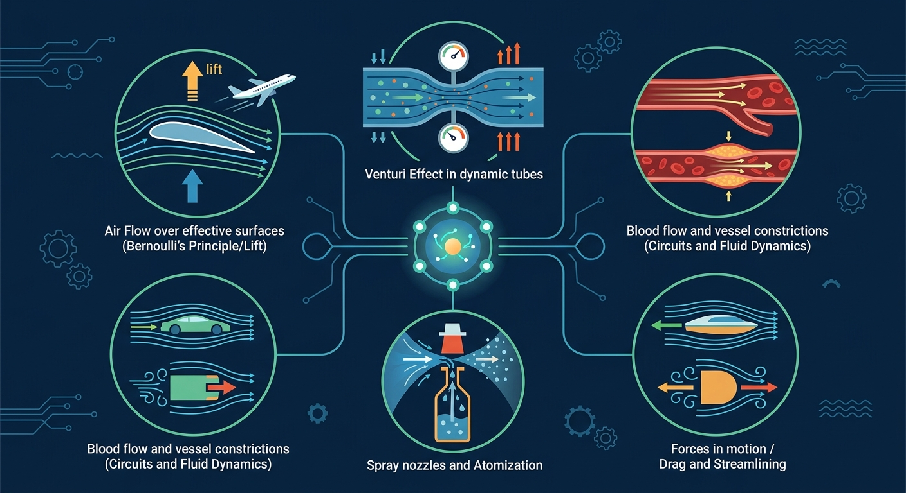

🎯 能说出流体压强与流速的关系
🎯 能分析生活中常见的流体压强现象
🎯 能计算简单情境下的流体压强差
❓ 为什么飞机机翼上面是弯的？
❓ 为什么两张纸往中间吹气会贴在一起？
❓ 为什么火车进站时要站在黄线外？
学完这一课，这些问题你都能自信地回答。
向两张纸中间吹气会怎样？
水管变细时水流速度如何变化？
And：学生知道固体压强的计算
But：流体压强会随流速变化难以理解
Therefore：建立流体压强与流速的定性关系
流体压强指流体内部单位面积受到的压力。当流体静止时，各点压强相等（如游泳池底部）；但当流动时，流速越大压强越小。例如用吸管吹纸片：吹气时纸片上方的空气流速加快，压强减小，下方大气压就把纸片托起来了。
🌍 火车站台安全线：列车进站时带动空气快速流动，人若站得太近，身后大气压可能把人推向列车。
两艘并排行驶的船容易相撞是因为？
用A4纸折成机翼截面形状，用吹风机从不同角度吹气
And：已了解流体压强特点
But：不理解能量守恒在流体中的应用
Therefore：用机械能守恒推导定量关系
伯努利原理本质是能量守恒：流速v大的地方动能(1/2ρv²)大，势能(压强p)就小。具体计算时：p+1/2ρv²=常数。例如水管变细处：横截面积减半时，流速变为2倍（连续性方程），此处压强降为原来的1/4（假设ρ=1000kg/m³，v从1m/s→2m/s时，p减少1500Pa）。
🌍 喷雾器：推动活塞时细管处气流速加快，药液被低压吸上来与空气混合喷出。
飞机机翼获得升力的直接原因是？
And：会计算管道截面积
But：忽略流量是三维问题
Therefore：建立连续性方程思维
流量(Q)=截面积(A)×流速(v)，单位是m³/s。由于流体不可压缩，同一管道中Q处处相等。例如花园水管：捏扁出水口使A从2cm²减到0.5cm²时，v会增到4倍（假设原流速1m/s→4m/s），这就是水枪射程变远的原因。注意：A变化超过5倍时湍流会使计算不准。
🌍 河流变窄处：河道宽度从10m缩到2m时，水深不变情况下流速会提高5倍，形成急流。
输液时抬高吊瓶主要改变？
And：知道理想流体模型
But：现实流体存在摩擦损耗
Therefore：引入雷诺数解释流动状态
粘滞阻力与流体粘度η、流速v、物体尺寸L有关。当雷诺数Re=ρvL/η＞2000时出现湍流。例如蜂蜜(η=10Pa·s)中下落的小球：直径1cm的铁球在蜂蜜里速度超过0.2m/s就会产生涡旋（计算得Re=2100），此时阻力突然增大3-5倍。
🌍 汽车高速行驶：当时速超过80km/h，空气阻力占总阻力的60%以上，这就是SUV比跑车耗油的原因。
下列哪种情况阻力突变最明显？
将流体压强分解为静压和动压两部分理解
流速越大压强越小是伯努利原理的核心
对比水管粗细变化与血压变化的相似性
用彩色烟雾可视化机翼周围的气流变化
解释喷雾器、吸尘器的工作原理
先独立作答，再点选项查看对错与错因。
当高铁快速通过站台时，站台与列车之间的空气压强变化是
下列现象与流体压强无关的是
两艘船平行航行时应保持距离是因为
当电风扇转动时，叶片____（前/后）方空气流速大压强小
答案：前
叶片推动前方空气加速流动
火车站安全线距离轨道____（大于/等于/小于）1米是根据流体压强计算得出
答案：大于
需考虑不同车型的流速影响范围
飞机获得升力的主要原因是？
喷雾器工作时，哪个部位压强最小？
火车站台安全线应设置在？
✅ 强调伯努利原理中反比关系
💡 受'速度越大力量越大'生活经验干扰
✅ 用箭头明确压强是垂直作用力
💡 对压强矢量的方向性理解不足
口诀：流速快，压强小；流速慢，压强大
类比：像人群跑步时，密集处走得慢（压强大），疏散处跑得快（压强小）